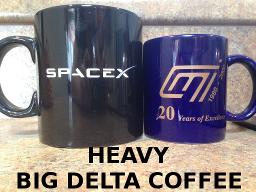

Our civilization's long tradition of debate makes clear which is the party of science:
Trump—And its rounding the corner and we have the vaccines coming, and we have the therapies coming. And I'll tell you what, one thing. When I got it, I had a choice. Do nothing, or use some of the things that we're looking at, like in this case, Regeneron...And I think that maybe I wouldn't be doing this discussion with you right now. We have therapies now and cures, maybe you can use the word cure, but we have therapies that are absolutely incredible, Savannah. [not Joe]
Biden—I managed the Recovery Act and I was able to invest billions of dollars into bringing down the cost of the cost per british thermal unit of wind and solar...
So we're making significant progress. The other thing we're going to do is provide an awful lot of work...because we'll save tons and tons of energy or billions of barrels of energy over time and at the same time provide significant employment and at good union wages, prevailing wages.
What is Functional Programming?
If men were angels, no government would be necessary. If angels were to govern men, neither external nor internal controls on government would be necessary.
Justice is the end of government. It is the end of civil society. It ever has been and ever will be pursued until it be obtained, or until liberty be lost in the pursuit.
—Publius
An essay trying to understand more "mathematical" type systems in the context of C programming. Assumes some knowledge of C and classical logic.
Its almost unfortunate when I get time off work...
One of the things I am most greatful to the Navy for is the simplifications it has made to my daily life and other Quality of Life improvements. So here are the PROS OF NAVY LIFE:
But enough rantbling and onto the CONS OF NAVY LIFE:
Please help me draw better diagrams by taking this 1 question philosophical survey!
The coffee mug Joe got my Mom packs in a lot of thrust for your day! I don't have the modeling software needed to make a meme as ridiculous as this video though: The World's Most Powerful Rocket.
